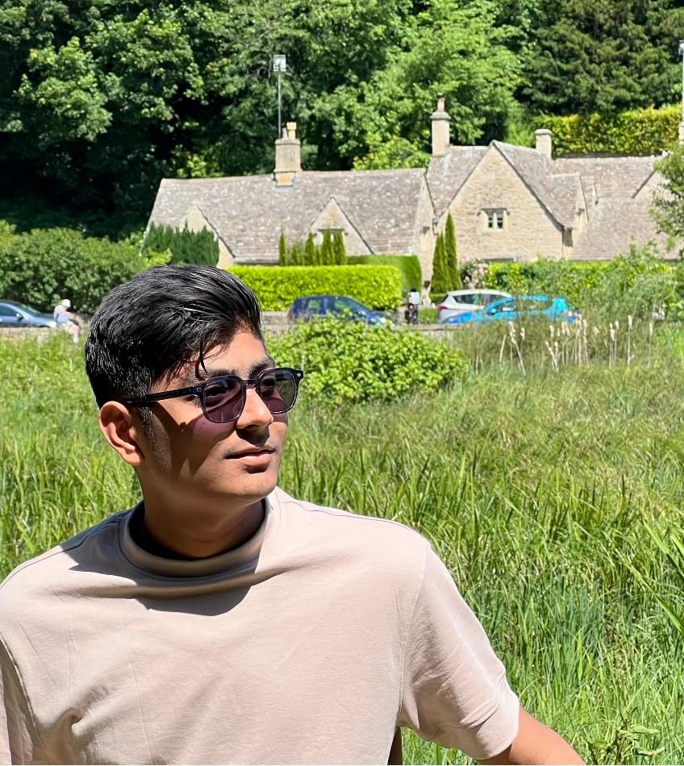

Founder 01 · CEO
Abhishek Khuthiya
The Strategist
A business analyst turned brand storyteller, Abhishek drives gaa-tha's marketing magic. With a background in international business and an obsession with brand psychology, he makes sure every campaign is built on insight and impact.